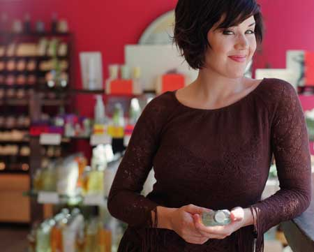

Did you know that cosmetics and personal care products aren'ttested by the U.S. Food and Drug Administration before theygo on the market? In fact, manufacturers are responsible fortesting their own products for safety. Unfortunately this meansunsafe ingredients may be lurking in your favorite soap, shampoo ormakeup.
The EnvironmentalWorking Group found that 80 percent of the products they testedwere contaminated with one or more substances linked to cancer andother health concerns. A recent Environmental Working Group studyof 15,000 cosmetics found that 22 percent of them were contaminatedwith 1,4-dioxane, which the EPA classifies as a probable humancarcinogen, and a known animal carcinogen.
The Campaign for Safe Cosmetics says many of thesechemicals are easily absorbed into the body because they're applieddirectly to your skin. And while the chemicals in any singleproduct may not be a concern, repeated exposure from a variety ofsources can be detrimental to your health.
The Environmental Working Group has a searchable database,called Skin Deep, to help consumers choose better,safer personal care products. Also check out the following sitesfor more information:
Environmental Working Group Skin DeepDatabase
TheCampaign for Safe Cosmetics
Grassroots Environmental Education
Teens for Safe Cosmetics Campaign
FDA Cosmetics Information Page
|
 |
|
|